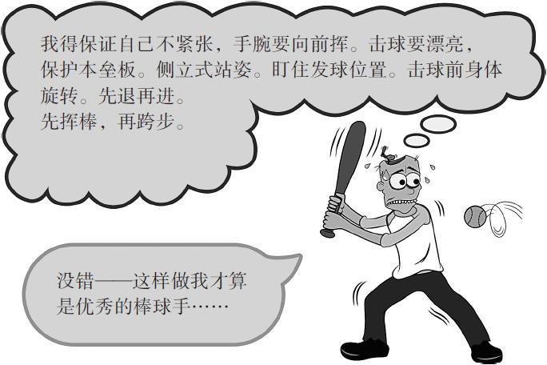

第12章 学会自我欣赏
形成直观认识
体育运动会为我们数学和科学的学习方法带来不少启发。比如拿打棒球来说，要学会击打动作，仅仅一天是不够的，但你的身体会在长期不停重复的过程中，不断完善挥动球棒的动作。不断重复会产生肌肉记忆，于是只要一个想法，即组块，就能让你的身体随之而动，而不必总要回想击球的所有复杂步骤。[1]
同理，一旦你在数学和科学的学习中明白了原理，就不用反复向自己解释方法。你不必一个个地数出口袋里的100颗豆子，再摆成10排，每排10颗豆子，才能得出10×10=100。到一定时候，记忆自然会给你答案。比如，做同底数幂的乘法，记住只要将相同底数的指数，即上标数字相加即可得到答案（104×105=109）。如果你常用这个套路来解决多类不同问题，你就会发现自己既明白了套路背后的原因，又明白了得到答案的方法。比起从书里找或让老师给出一个约定俗成的解释，这样得到的理解要深刻得多。你的大脑构建出具有意义的模型，从而产生更深刻的认识，而仅靠别人告知答案，你是达不到这个效果的。要记住，人们会试着理解他们感知到的信息。单纯听别人讲道理，是无法学会任何复杂概念的。（正如数学老师所说：“数学可不是用来看着玩的。”）
象棋大师、急诊室医生、战斗机飞行员，还有许多其他的专家通常得在极短的时间内做出复杂的决定。这时他们会关闭自己的意识系统，转而依赖于久经磨炼的直觉，倾尽一切去利用根深蒂固的思维组块。[2]在一定时候，如果主动让意识去“理解”自己行为的原因，就会放慢你的脚步，搅扰你的思路，从而导致错误决定。
有很多老师和教授往往会在无意中恪守规则。一个有趣的研究给出了说明，镜头拍下6个做心肺复苏（CPR）的人，但其中只有1位是专业医护人员。[3]实验要求专业医护人员观看视频，猜这6个人当中到底谁才是真正的专业人士。90%有“真才实学”的专业医护人员都选对了答案，他们不约而同地回答说：“那个人看起来心里有数。”[4]而心肺复苏教练只用了别人30%的时间就从众选项中挑出了正确答案。吹毛求疵的理论家对视频中的专业人士评判不一，要么说人家在过程中没有恰当停顿，要么就是说那人的手放错了位置。对于教练来说，坚持规则要比实际操作有更重大的意义。

一旦你明白了数学和科学问题的原理，就不用再反复为自己阐释解题方法了。想太多会发懵。
不必羡慕天才
奥运健儿并不是周末慢跑几个小时就速度超群，也不是闲暇时举几次哑铃就力拔千斤；象棋大师也不是靠临时抱佛脚就能构筑起自己的神经结构。相反，他们都是在日积月累中，伴随着大量练习，才慢慢建立起自己的知识库的，他们在练习中形成了从宏观角度理解问题的能力。这样的练习把记忆痕迹牢牢储存在了长期记忆的仓库里，当你需要时就可以轻松快速地找到神经模型。[5]
让我们回想一下象棋大师马格努斯·卡尔森（Magnus Carlsen）——他不仅擅长快棋赛，常规赛也不在话下。卡尔森对曾经数以千计的棋局有着超乎常人的掌握——看一眼棋盘上终局棋子的排布，他就能从几百年间的上万场棋赛中找出这种棋局，并立刻告诉你是哪一场。也就是说，卡尔森创造了一个特大型的组块资料库，里面包含了各种不同的棋局走法。他能蜻蜓点水般地迅速浏览组块，从中找出当时的选手，在面临与自己相似的情境下采用过的走法。[6]
卡尔森做到的事并没有什么特别，尽管身为佼佼者，古往今来也只有少数人足以与他匹敌。但对于象棋大师来说，至少用10年时间练习钻研，习得数以千计的记忆组块模型，这种做法再典型不过了。[7]相较业余选手，这些现成的模型能让大师们在任意棋局中更迅速地辨认出关键棋步，他们练就出一副专业眼神，这让他们在任何情况下都能立刻察觉出最佳的行棋之道。[8]
等等，象棋大师和能心算6位数乘法的人，难道不是因为天赋异禀吗？不，当然不全是这样。坦白一点——智力因素很重要。较聪慧的大脑，常常相当于拥有着内存更大的工作记忆。这样，你的记忆快车或许就能同时承载9件事，而不是只有4件，就像斗牛犬扑向猎物一般，学习数学和科学变得更加势不可当。
但其实呢？强大的记忆力会让你很难发挥创造力。
这是为什么呢？
这要归因于我们又爱又恨的——思维定式。你的大脑中已经掌握的固有知识会阻碍你接受新的想法。超强的工作记忆会死死抓住原来的想法，导致新观念难以找到进入的空隙。我们可以让这种极强的专注力偶尔犯“多动症”，呼吸一口新鲜空气——换句话说，“多动症”能够转移你的注意力，即使当时你并不想移开目光。解决复杂问题的能力会让你在简单问题上钻牛角尖，结果就是南辕北辙，忽略了更简单、更显而易见的解决方法。研究表明，越是聪明的人越容易在繁芜复杂的问题上迷失自我。而头脑略逊一筹的人反而更容易找到更简单的解决方法。[9]
是什么并不重要，如何思考才是关键
经验告诉我，GRE高分和最终的职业成就几乎成反比。确实，很多得分垫底的学生反而特别成功，而很多“天才”却出于各种原因而中途落败。[10]
——比尔·赛特勒（Bill Zettler）博士
年度教师荣誉称号获得者，生物学教授，长期学术顾问，就职于佛罗里达州，根斯维尔，佛罗里达大学
如果你也属于记忆能力有限的人群（这类人经常在课堂上走神、做白日梦，而且他们必须在安静的地方才能集中注意力，以便尽最大可能地使用工作记忆），那么，欢迎你加入创造者的大家族。拥有相对较小的工作记忆空间，意味着能更轻松地归纳学习内容，让新旧知识更有创意地结合在一起。因为工作记忆从前额叶皮层的专注能力中形成，它通常无法牢牢地锁定知识，所以你的大脑的其他部分更容易向它输入信息。大脑的其他部分包括：感觉皮层——这里不仅与周围环境的步调更加一致，而且是梦的源头，更不用说，其实你的创意点子也都源自这里。[11]有时你需要下更大的功夫（甚至不是偶尔，是经常）才能理解事情来由，可你一旦对这些信息进行组块，就可以颠来倒去地把玩这个组块——让它走上创造之路，到达你未敢想象过的风景！
在思维组块的过程中，还有另外一点值得注意：国际象棋，通常被视为高等文化水平者的领域，但其中一些精英玩家差不多就只有普通智力水平。这些中等智力者之所以能超越某些智商更高的玩家，是因为他们练得更多。[12]这才是关键所在。无论智力水平如何的象棋选手，都需要勤加练习来培养天赋。训练，尤其是对学习材料中最困难的部分更要刻意训练，这样才能让那些拥有普通智力的人有机会上升到“天赋异禀”的境界。就像你可以通过练习举重让自己增长肌肉，你也可以通过练习某些神经模型来加深并拓宽你的思维。有趣的是，训练也会拓展你的工作记忆。关注回想的研究者发现，练习反向重复记忆更长的数字，似乎对提高工作记忆有效果。[13]
但是那些天资聪慧的人也有自己的难处。有时候这些孩子会受到打压，因此他们不得不隐藏或者压抑自己的才华，再让他们走出来会很难。[14]聪明的人有时更挣扎，因为他们会更容易看到症结所在，不论是好是坏。特别聪明的人比那些智商平平的人更易拖延，因为在成长过程中，拖延总是屡试不爽，也就是说他们在早年并不大可能去学会什么关键生活技能。
不管是凭过人天资还是靠勤奋拼搏才掌握了基础知识，你都应该意识到，不是你一个人会有骗子心理——某次考试碰巧发挥得不错，紧接着的考试也撞了运，真可谓侥幸，可是他们（你的家人和朋友）最终还是会发现你的水平不过如此。这种感觉再平常不过了，它甚至还有自己的名字——“冒名顶替症候群”。[15]如果你因为感到自身不足而痛苦，你要知道有同样心理感受的人大有人在，他们只是保持沉默了而已。
每个人的天赋各有不同。就像古谚语说的：“当上帝为你关闭了一扇门，他一定会为你打开一扇窗。”请你仰起头，睁开眼，专注于你的那扇门。
触碰无限可能
有些人认为发散的、直觉性的思考方式与我们的心灵更加步调一致。发散思维促成的创造力似乎超越人的理解范围。
就像阿尔伯特·爱因斯坦所说：“生活的方式只有两种：一种是生活中无奇迹；另一种是生活中事事皆奇迹。”
不要小看自己
我是学校里辅导科学奥林匹克竞赛的老师。在过去的9年里，我们赢得了8次州冠军。今年我们在州赛落后了一分，平时我们通常会进全国前10。我们发现很多尖子生（也就是全科A＋生）在科学奥林匹克竞赛的压力下表现一般，还不如那些平时心智上有所把握，能将知识转化为自己用的“二等生”。有趣的是，往往那些表现超长的“二等生”（如果可以这么称呼他们）并没觉得自己比班里的尖子生聪明。但我更愿意培养那些看起来表现并没有那么优秀的学生，他们更能够有创意地思考，这也是科学奥林匹克竞赛的要求所在，他们不像一些尖子生，如果给出的问题无法与大脑中的记忆组块相匹配就会手足无措。
——马克·波特（Mark Porter）
生物老师，任教于加利福尼亚，萨克拉门托，
Mira Loma高中
本章小结
·一定时候，在能熟练运用组块资料之后，你应尽量不再去纠结于每一个小细节，而是自然而然地去解决问题。
·有些学生能快速掌握材料，和他们一起学习确实会给人不小的打击。但是“平均水平”的学生常常在主动性上、做好事情的能力上以及创造力上都有优势。
·把握创造力的一部分关键是要能从专注模式转换到更放松的、白日梦一般的发散模式。
·太过专注会阻碍你发现真正要找的答案——就像用锤子钉一颗螺钉，因为你已经认定了那是一颗钉子。当你卡在一个问题上，有时候最好的方法就是把它放下，转而解决其他问题，或者干脆小睡一会儿。
驻足与回顾
合上书，看看别处，本章的主要思想是什么？停下来，同时试着回想整本书目前为止最重要的观点。
学习提升
1.想一想，自己有没有在哪个领域坚持不懈，并如愿以偿。或者，有没有一个新的领域，让你想坚持一下？在低迷时期，觉得自己停滞不前时，你有没有什么后备计划？
2.人们经常希望自己别再发呆神游了，因为这会打断他们真正要专注的活动，比如认真听一堂重要的课。下面哪种方式对你更有效——强迫自己保持专注？或是意识到自己神游时再把自己的注意力拉回来？
从迟钝的笨孩子到人生赢家：尼克·阿普尔亚德的故事
尼克·阿普尔亚德（Nick Appleyard）在一个高科技公司担任副主席，管理整个美洲业务部，该公司开发并支持很多高级物理仿真工具，运用于太空、汽车、能源、生物医药及其他很多经济领域。早些年，他在英国的谢菲尔德大学获得了机械工程学位。
在我的成长过程中，脑子迟钝、问题儿童成了我的标签。它们对我的影响很深。我感觉我的老师们对我不抱任何成功的希望。雪上加霜的是，我的父母也一样觉得我无药可救，对我的学习进度感到沮丧。我觉得我的父亲是最失望的那个人，他是大型实习医院的高级内科医师。（我后来才知道在他的童年时代也跟我有过相同的境遇。）而这个恶性循环，打击了我生活各个方面的自信。
那么问题到底出在哪里？数学及和数学有关的一切——分数、乘法表、长除法、代数等，全都枯燥乏味，毫无意义。
有一天，事情出现了转机，但当时我并没有意识到。父亲带了一台电脑回家。我曾耳闻很多小孩十几岁就能够编出广受喜爱的电脑游戏，之后一夜暴富。我也想成为他们当中的一个。
我读书，我练习，我编更难的程序，无一例外都涉及一些数学知识。终于，我的一个编程作品，被当时很流行的一家英国计算机杂志接受并发表了——这对于我来说简直太刺激了。
现在我每天都会看到数学在得到怎样的应用，诸如应用于下一代汽车的设计，将火箭送入太空，分析人类的身体如何运转。
数学不再毫无意义。而它变成了奇迹的源头，更造就了一个伟大的职业！
[1] Jin et al.2014.
[2] Partnoy 2012，p.73。Partnoy接着指出，“有时精确理解我们无意识做的事会扼杀我们的自然天性。如果我们的自我意识太强，当我们需要直觉的时候往往会受到阻碍。而如果我们没有一点自我意识，直觉就总也得不到升华。困难在于，仅仅几秒钟的思考中要意识到可能会影响我们决定的因素……但不要太过注意它们，那样它们会变得木讷而毫无效果”（Partnoy 2012，p.111）。
[3] Partnoy 2012，p.72，引用了Klein 1999.
[4] Klein 1999，p.150，引用了Klein and Klein 1981。但是要注意Klein和Klein 1981中所述的样本数目较少。
[5] Mauro Pesenti和同事（2001，p.103）指出，“我们认为，非专业人士的算术才能并不源于不断增加的练习过程，而是专业人士和非专业人士计算时使用了不同脑区。我们发现，专家能够在‘短时间内耗费精力的记忆储存策略’和‘高效短暂的记忆编译和提取过程’间来回转换，这个转换过程由右侧额前骨区和内侧颞区来维持。”早在1899年，才华横溢的心理学家William James在他经典的《与老师谈心理学》（Talks to Teachers on Psychology）一书中写道，“你们现在知道为什么‘恶补’是多么不可取了。填鸭或恶补是在考试前通过大量密集训练来记忆事物。但这样学到的知识，却几乎无法融会贯通。另一方面，同样的事物会在不同日子里、不同背景中重演，阅读、背诵、反复查看、再联系其他事物并回顾，然后这个事物就这样很好地嵌入了你的思维结构中。这就是为什么要给你的学生强调让他们习惯于不断运用”（William 2008，[1899]，p.73）。
[6] 在一项经典研究中，William Chase和Herbert Simon（1973）发现象棋大师对下一步棋的灵感其实来自训练过程中业已形成的出色且迅速的感知模式。Fernand Gobet和同事（2001，p.236）将组块定义为“一组互相联系的要素，但与另一个组块中要素的联系并不强”。
[7] Amidzic et al.2001；Elo 1978；Simon 1974。Gobet and Simon 2000引用了一个包含的300000组块的图。
[8] Gobet 2005。Gobet继续指出，在某一个领域的专业知识并不会迁移至另一领域。确实如此，比如你学习了西班牙语，这对你在德国点酸菜一点帮助都没有。但是思维过程是很重要的。如果你学会了如何学习一门语言，那么在学另一门语言的时候就会非常容易。再一次说明，如下象棋一样培养出的专业技能是非常可贵的，它给予你一系列神经结构，而它们类似于数学和科学的学习中所需的神经结构。即使这个神经结构简单得只是你需要消化游戏规则，那么它就是有价值的见解。
[9] Beilock 2010，pp.77-78；White and Shah 2006.
[10] 确实，在研究领域里，此类发现也获得了相当一部分的支持。详见Simonton 2009.
[11] Carson et al.2003；Ellenbogen et al.2007；White and Shah 2011.
[12] Merim Bilali和同事（2007）指出某些象棋玩家智商在108到116之间，但由于他们进行了额外训练，也进入了精英玩家的队伍。而精英团队平均智商是130。详见Duckwortha andSeligman 2005.诺贝尔奖得主Richard Feynman喜欢说自己的智商相对偏低，只有125，以此证明不管智力测试的结果如何，每个人的潜力其实是无限的、有待挖掘的。Feynman显然还是有着天生聪慧的，不过他年少时就已经沉迷于通过练习来发展数学和物理知识和本能了（Gleick 1992）。
[13] Klingberg 2008.
[14] Silverman 2012.
[15] Felder 1988。Justin Kruger and David Dunning（1999）指出：“无能力者对自己的评价偏差源自自身失误，而极有能力者对自我认识的偏差，来自他人的失误。”